Three tries at a resin-pouring production record, in about two months
This one's for the record, not for a customer: how a Google Form turned into a
spreadsheet nobody should have asked a spreadsheet to do, then into a real Python app, then into
the thing running the floor today. Every screenshot in here is a real one, pulled from the same
folder they landed in the day they were taken.
Tries3
Elapsed~8 weeks
Now runningFastAPI · React · PostgreSQL
VersionPT‑V4.02
Try one · roughly three weeks
A Google Form, and then a lot more than that
It started the way most of these do: a Google Form so operators could stop writing
bottle counts on paper, feeding a spreadsheet nobody had to open unless they wanted the numbers.
That much worked fine. What happened next is the part worth writing down — the sheet didn't
stay a sheet. It grew pivot tables, then charts, then a second and third linked tab, then something
that was doing its level best to look like a real manufacturing dashboard, built entirely out of
cell formatting and conditional rules.
The fuller story
The earliest surviving screenshot is from August 13 — the raw form responses, a
timestamp and a bottle count per row, with a couple of running totals bolted on the side.
Two days later there's a pivot table breaking downtime reasons into a pie chart. By the 19th
it's a full pivot-plus-chart view of volume by resin and by pump. None of this was asked for;
it's just what happens when the only tool you have is a spreadsheet and the questions keep
being real ones.
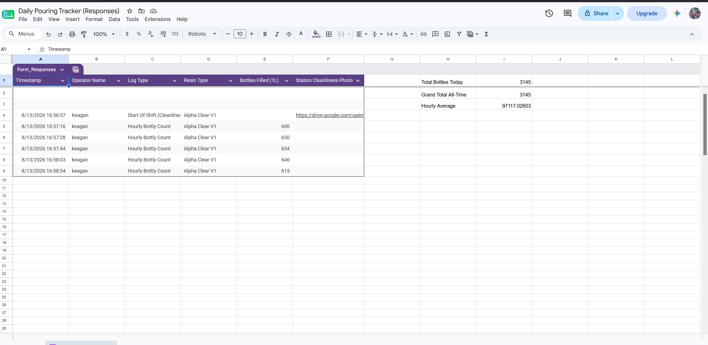
Aug 13 — where it actually starts: raw form submissions, a running
daily total in the corner.
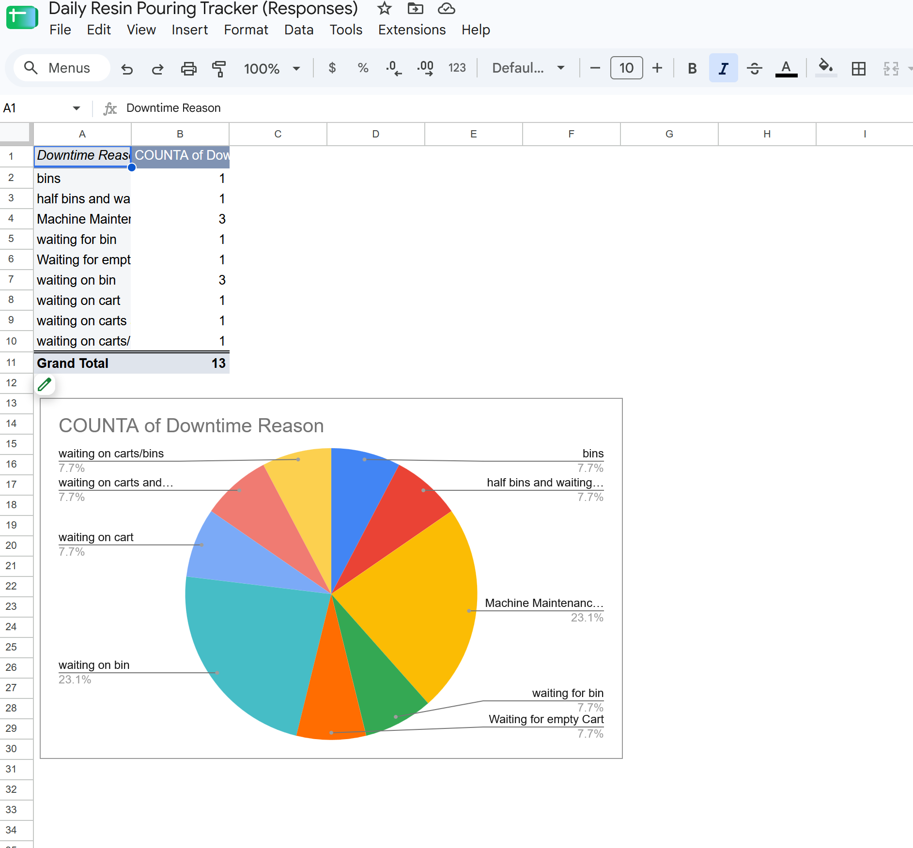
Aug 15 — the first real analysis: downtime reasons, pivoted and
charted straight out of the form data.
Formlabs MES · How This Got Built2
Try one, continued
The moment a spreadsheet stops being one
By the third week this wasn't a tracker anymore. It was a genuine multi-tab system
— a Master Validation Manager, a Resin Weight Specification Dashboard, a Cleanliness &
Station Photo Gallery, an Analytics tab — each one a real spreadsheet doing a real job, wired
together with lookups and named ranges. The centerpiece was a "Live Dashboard" tab styled to look
exactly like a web app: a navigation bar, KPI cards, a shift pace tracker, a leaderboard.
The fuller story
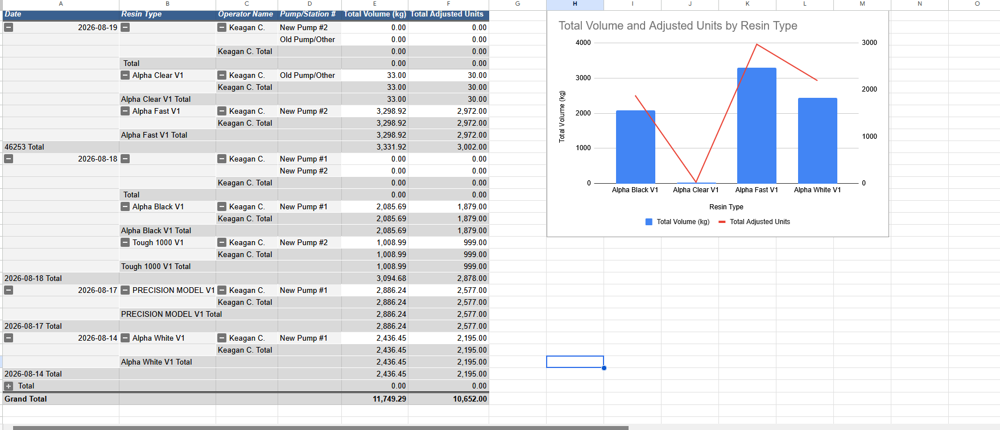
Aug 19 — volume and adjusted units by resin, a combo bar-and-line
chart driven off a pivot.
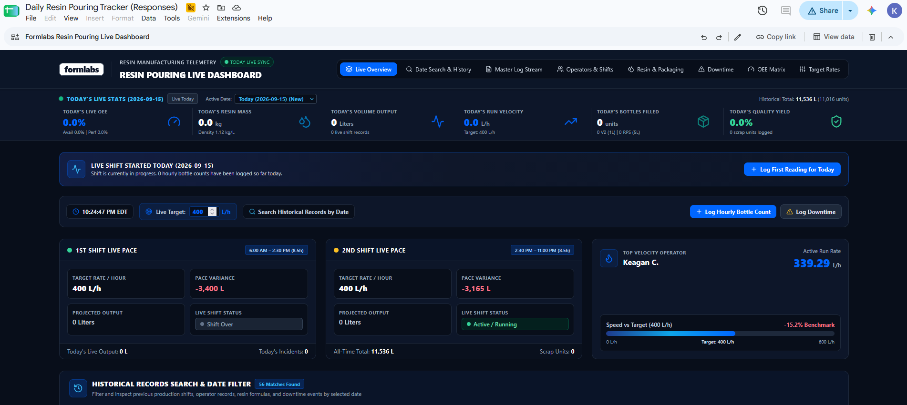
The "Live Dashboard" tab — a nav bar, live OEE, resin mass, run velocity,
a leaderboard, all of it cell formatting and formulas made to look like an app.
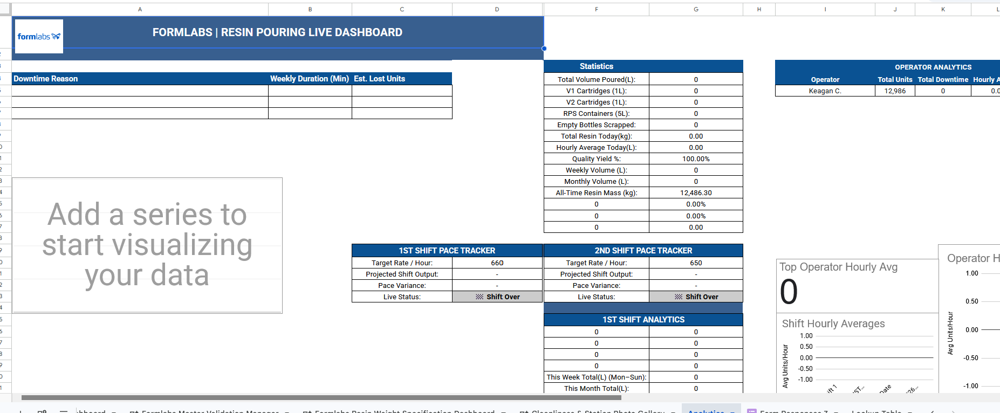
One of several linked sheets behind it — the Analytics tab, its own
statistics table, operator breakdown and shift pace trackers, feeding the dashboard above.
Why this was the wrong tool
Tank levels were part of that same system — reactor fill state, tracked and drawn
with the same formulas and conditional formatting as everything else on the dashboard. That
was the actual realization: recalculating a "live" view of the floor, across a dozen linked
tabs, every time anyone touched a cell, is exactly the kind of thing Sheets was never built to
do quickly. The question "how full is that tank right now" needed to be answered by software,
not a spreadsheet asked to imitate one.
Formlabs MES · How This Got Built3
Try two · roughly four weeks
Real code, running as Streamlit
The rebuild started in Python, with the form data pulled over as a one-time CSV
import and a real relational schema underneath it — the same shape of tables (production
logs, downtime, reactors, resin specs) this app still uses today. Streamlit was the obvious choice
for the front end: it turns a Python script into a working UI with almost no separate frontend
work, which is exactly what a solo rebuild needs in its first days.
The fuller story
The import and the first schema both land on August 22nd, within about an hour of each other
going by the file timestamps — load_csv.py pulling the old sheet's rows in,
then database.py taking shape with a seed_initial_data() function
whose name is still exactly what it's called in this codebase today.
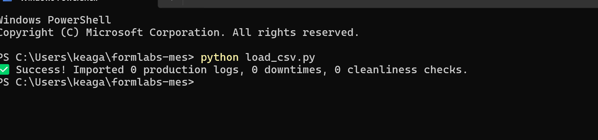
Aug 22, evening — the one-time migration off the spreadsheet:
python load_csv.py, pulling the old rows into a real database.
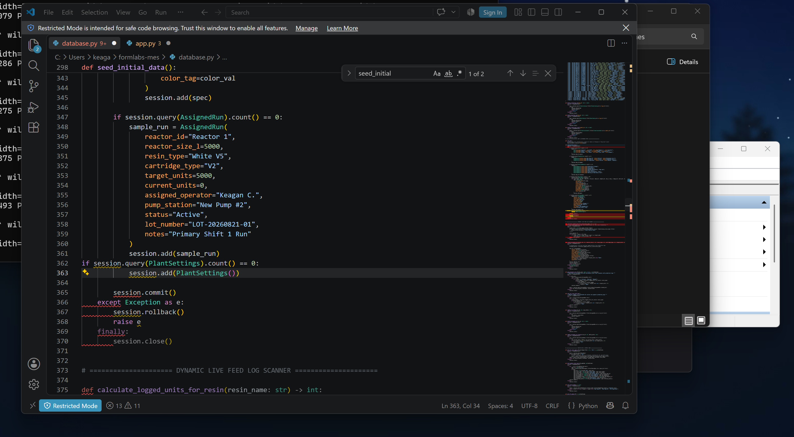
The same evening — database.py taking shape, including a
seed_initial_data() that survives, by name, into today's codebase.
Formlabs MES · How This Got Built4
Try two, continued
From a bare login screen to a real SCADA feel
The first working dashboard was up that same night — a login screen, live
production stats, shift pace tracking. Within a day the reactor tanks had a real visual (simple
rounded rectangles at first), and within two weeks the whole thing had a proper "SCADA Terminal"
login screen with the Formlabs mark on it. This is where the project stopped being a rebuild and
became genuinely capable software: real lot verification, real downtime tracking, real QC.
The fuller story
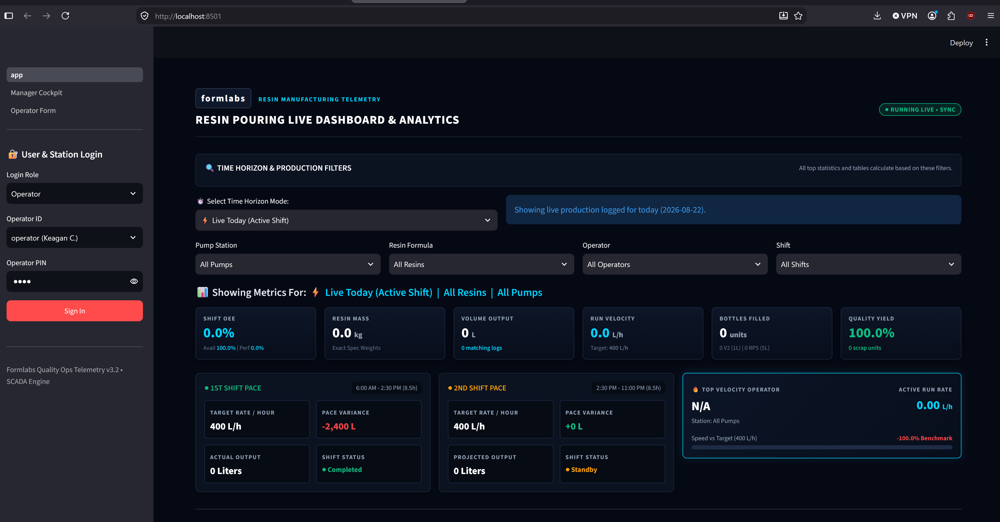
Aug 22, night — the first working dashboard, hours after the
migration.
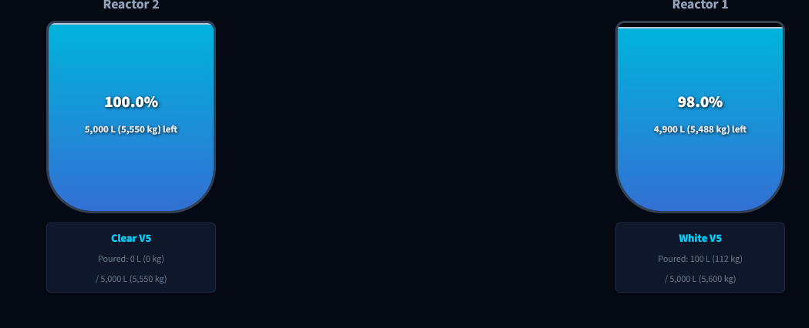
Aug 23 — the reactor tanks, in code instead of spreadsheet
cells, for the first time.
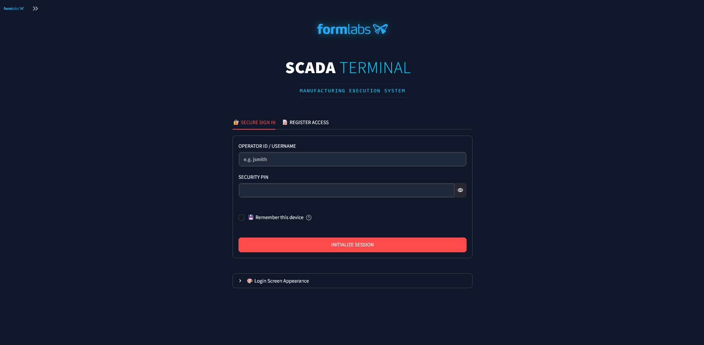
Aug 31 — the "SCADA Terminal" login, about a week and a half
into the rebuild.
What it cost
Streamlit's whole model is rerunning the entire page script on every interaction. That's
why it's fast to build in and exactly why it hurt on the floor: every tap, every keystroke on
an operator's phone, caused the full page to redraw — a visible flash and a felt lag,
worst on the single busiest screen in the app, the hourly pouring log. Four weeks of real
features landed on top of an interaction model that was never going to feel instant.
Formlabs MES · How This Got Built5
Try three · about a week · where it stands now
FastAPI and React
The business logic didn't get rewritten — four weeks of Streamlit-era rules
around lot verification, changeovers and reactor levels ported over intact, because none of that
was ever the problem. What changed is everything around it: a real API, a real frontend, no
full-page reruns. A tap responds like a tap. Streamlit came off the machine entirely once this
reached parity, rather than running the two side by side indefinitely.
The fuller story
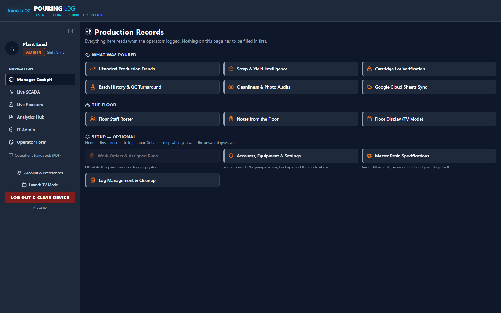
Manager Cockpit, today — the same categories of information the
spreadsheet was reaching for, actually built for it.
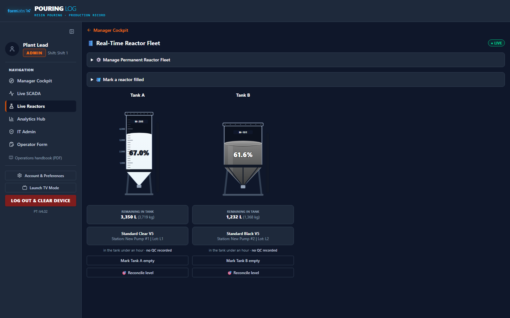
The reactor tanks now — the same question ("how full is it") the sheet's
fake dashboard was built to answer, drawn for real and updating live.
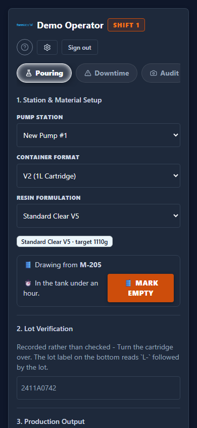
The hourly pouring log, on a phone — the direct descendant of the
original Google Form, six weeks and two rewrites later.
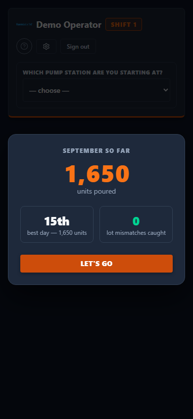
One of the newer touches — a personal recap shown once at sign-in,
nothing a spreadsheet or a Streamlit rerun could have done this cheaply.
Formlabs MES · How This Got Built6
Where it stands
Two months, three tries, one working record
None of the three tries were wasted. The spreadsheet proved the questions were real
before a line of Python existed. Streamlit proved the business rules — lot verification,
changeovers, downtime, QC — were right, at the cost of the floor feeling every rerun. What's
running now inherited both: the rules, and the reason to finally stop asking the wrong tool to
carry them.
3tools tried
~8weeks, start to now
50automated test scripts today
PT‑V4.02current version
A note on the screenshots
Every image in this document is real, pulled from the actual folders and the actual running
app on the dates given — nothing staged for this write-up except the three screenshots of
the current app, taken against a scratch copy of the database rather than the real production
data, and the three re-opened spreadsheet screenshots taken today of the old Sheets system to
show what it still looks like.